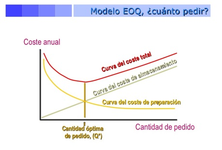

El objetivo del EOQ es minimizar los costos totales. Con los supuestos que el modelo toma los costos significativos son el de preparar u ordenar y el de mantener. Todos los demás costos en si son constantes, de modo que si minimizamos los costos de ordenar y mantener tendremos un costo total mínimo.

Elaboración propia
Como se puede observar en la figura 2, una reducción en los costos reducirá la curva de costo total y la curva de costo, también reduce la cantidad óptima a ordenar, teniendo un lote pequeño, el cual tendrá un impacto positivo en la calidad y flexibilidad de producción.
Otro detalle que podemos observar en la figura 2, es que la cantidad óptima a ordenar aparece en el punto en el que las curvas de costo de ordenar y el de mantener se cruzan. Esto no es una casualidad, debido a que con el modelo EOQ, la cantidad óptima aparecerá donde ambos costos son iguales. Con este hecho desarrollaremos las ecuaciones que nos darán el valor de Q*.
Los pasos son:
Desarrollar una expresión para el costo de ordenar o preparar
Desarrollar una expresión para el costo de mantener
Establecer el costo de preparación igual al de mantener
Resolver la ecuación para la cantidad optima
Con las siguientes variables podremos construir la ecuación que nos llevara a Q*:
Q = Número de unidades por orden
Q* = Número óptimo de unidades a ordenar
D = Demanda anual en unidades para el artículo en el inventario
S = Costo de ordenar o preparar de cada orden
H = Costo de mantener o llevar inventario por unidad por año
Pasos por seguir:
1. Costo anual de preparación = (Número de ordenes colocadas por año) x (Costo de preparación u orden por ordenar)
=((Demanda anual)/(Número de unidades en cada orden))(Costo de preparación por ordenar)
=(D/Q)(S)=D/Q S
2. Costo anual de mantener = (Nivel de inventario promedio) x (costo de mantener por unidad por año)
=((Cantidad a ordenar)/2)(Costo de mantener por unidad por año)
=(Q/2)(H)=Q/2 H
3. Cantidad óptima por ordenar se encuentra cuando el costo anual de preparación es igual al costo anual de mantener:
D/Q S=Q/2 H
Para despejar Q*, simplemente se multiplican de forma cruzada los términos y se despeja Q:
2DS=Q2 H
Q2=2DS/H
Q*=√(2DS/H)
Ejemplos
Ejemplo 1
A Sharp Inc. Una compañía que comercializa agujas hipodérmicas indoloras para los hospitales, le gustaría reducir su costo de inventario al determinar el número óptimo de agujas que debe solicitar por orden. Su demanda anual es de 1000 unidades; el costo de preparar u ordenar es de $10 por orden, el costo de mantener por unidad es de $0.50.
Solución:
Usando estas cifras, podemos calcular el número óptimo de unidades por orden:
Q*=√(2DS/H)
Q*=√(2(1000)(10)/0.50)=√40000=200 unidades
Interpretación. Sharp Inc. Debe pedir 200 unidades por orden.
Ejemplo 2
Sharp Inc. Tiene un año de 250 días hábiles y desea encontrar el número de órdenes (N) y el tiempo esperado entre ordenes (T) para este periodo.
Solución.
N=Demanda/(Cantidad a ordenar)=1000/200=5 órdenes por año
T=(Número de días de trabajo por año)/N=250/5=50 días entre ordenes
Interpretación. La compañía ordenara cada 50 días agujas dando un total de 5 órdenes al año.